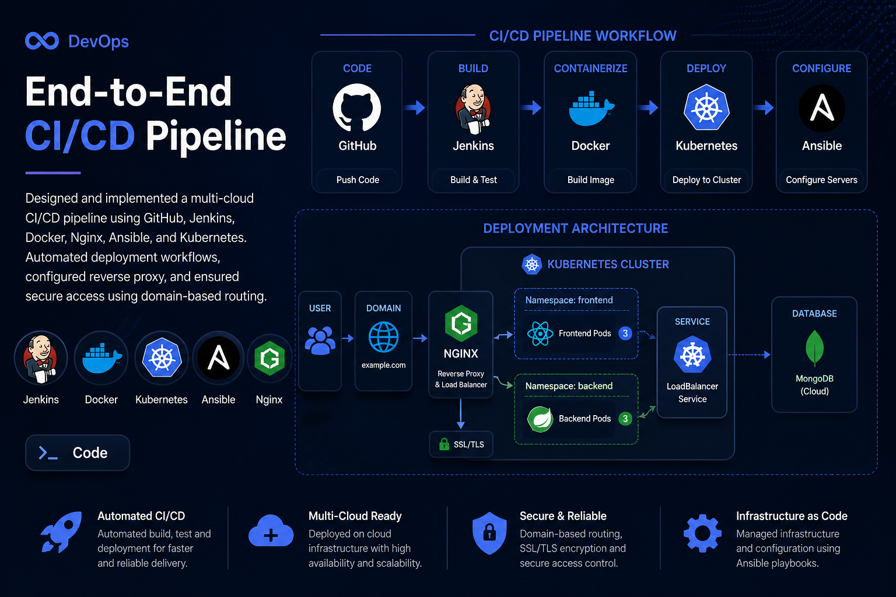
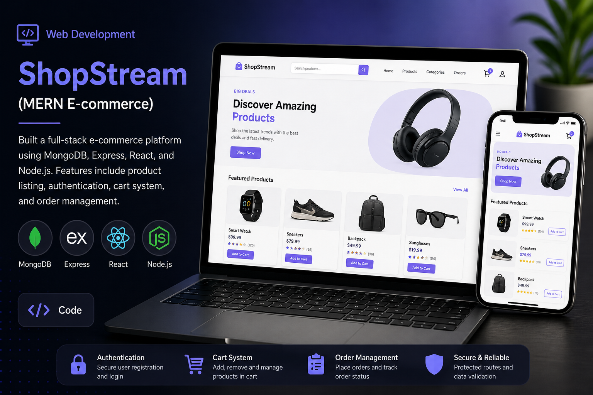
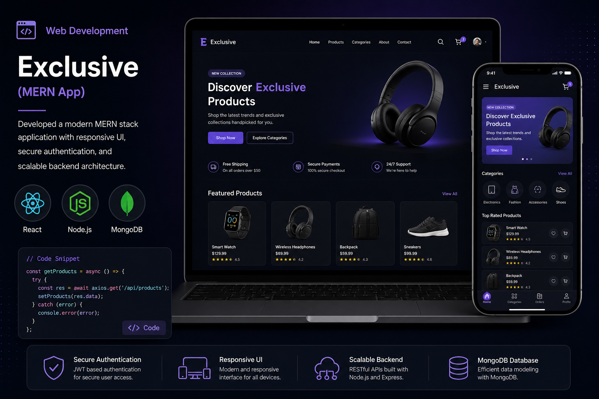
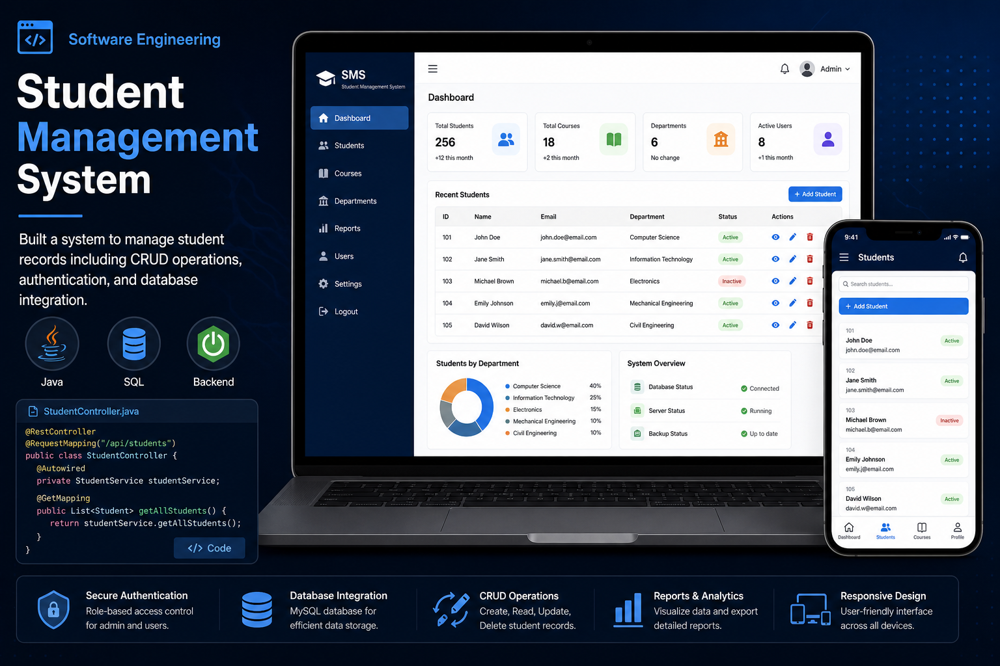
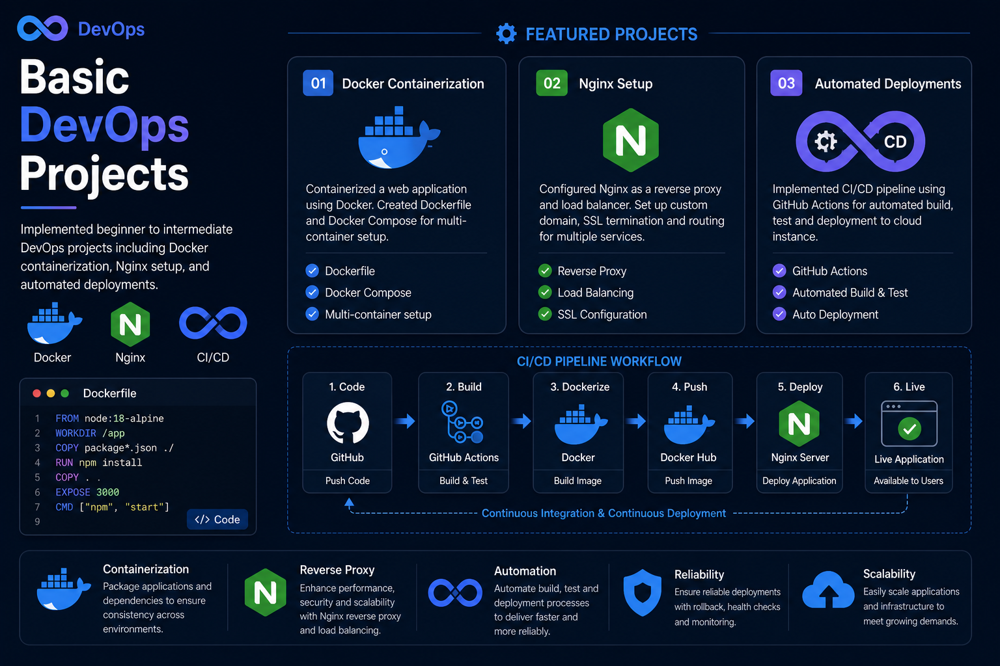

Software Engineering student with a passion for cloud computing, DevOps, web development, and building scalable real-world applications. Seeking opportunities to gain hands-on experience and contribute to impactful projects.
I'm a Software Engineering student with a passion for technology, cloud computing, DevOps, and software development.
I'm currently pursuing a Master of Software Engineering with a focus on AI and Advanced Systems at Torrens University Australia. My journey has positioned me at the intersection of cloud infrastructure, DevOps, backend systems, and modern web development.
I enjoy building production-ready applications, automating deployment pipelines, working with cloud platforms, and creating clean user-friendly web applications.
My technical interests include CI/CD pipelines, Docker, Kubernetes, Jenkins, Ansible, Terraform, Nginx, MERN stack development, and cloud platforms such as AWS, Azure, and GCP.
Software Engineering
Torrens University Australia
AI & Advanced Systems
Software / IT related academic foundation
Technical & Academic
A comprehensive skill set spanning cloud computing, DevOps, web development, and software engineering.
Here are some of the projects I've worked on that showcase my skills in web development, DevOps, and software engineering.

Designed and implemented a multi-cloud CI/CD pipeline using GitHub, Jenkins, Docker, Nginx, Ansible, and Kubernetes. Automated deployment workflows, configured reverse proxy, and ensured secure access using domain-based routing.
Built a full-stack e-commerce platform using MongoDB, Express, React, and Node.js. Features include product listing, authentication, cart system, and order management.


Developed a modern MERN stack application with responsive UI, secure authentication, and scalable backend architecture.

Built a system to manage student records including CRUD operations, authentication, and database integration.

Implemented beginner to intermediate DevOps projects including Docker containerization, Nginx setup, and automated deployments.
My professional experience, technical projects, and leadership contributions.
XYZ
Designed a multi-cloud CI/CD pipeline using GitHub, Jenkins, Docker, Nginx, Ansible, Terraform, and Kubernetes with secure domain-based deployment.
I'm always open to discussing new opportunities, projects, collaborations, or just having a chat about technology and web development.
hello@grishma.dev
Liverpool, Sydney
Whether you're looking to collaborate on exciting projects, discuss opportunities, or connect with a fellow developer, I'd love to hear from you!